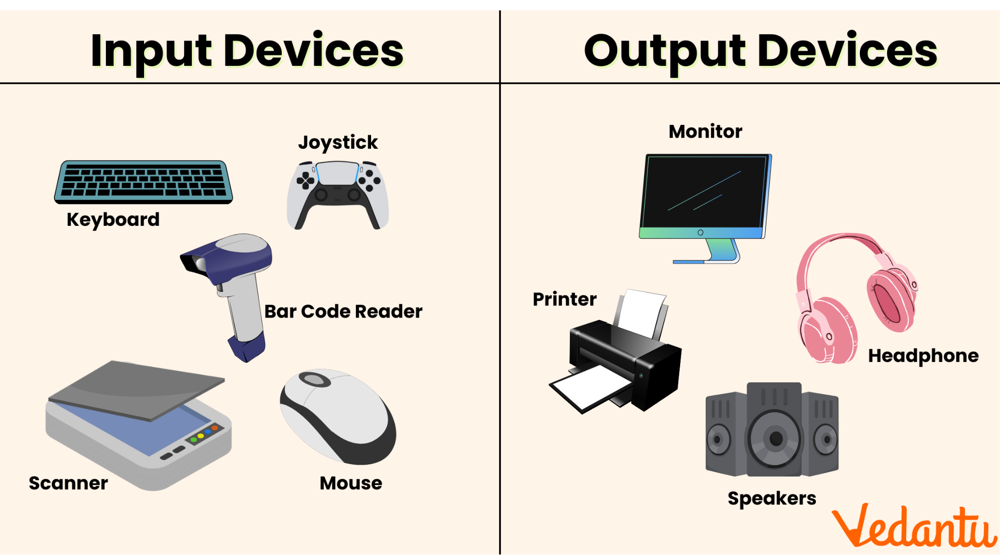

Hoe werkt een computer?
Een computer werkt altijd op een vaste manier:
- Invoer van informatie
- Opslaan van deze informatie
- Verwerking van deze informatie
- Uitvoer van resultaten

Een computer werkt altijd op een vaste manier:
De invoer naar de computer is de informatie die jij als gebruiker naar de computer stuurt. Je doet dit bijvoorbeeld door je muis te bewegen, of door bij een scherm met touchscreen met je vinger op het scherm te drukken. Zo wordt er informatie naar de computer verzonden.
Alle informatie die jij naar de computer stuurt, wordt in het geheugen opgeslagen. De processor van de computer haalt deze informatie uit het geheugen en verwerkt de informatie volgens een vast patroon. De informatie die is verwerkt, wordt door de processor weer terug naar het geheugen gestuurd. Als alle ingevoerde informatie is verwerkt, is de informatie klaar om uitgevoerd te worden
De informatie die wordt uitgevoerd verschilt, het hangt er namelijk vanaf wat voor soort informatie het is. Dit kan bijvoorbeeld tekst, foto's of games zijn. Daarnaast kan via het internet de uitvoer van de ene computer de invoer van de andere computer zijn.
In het stukje hiernaast worden verschillende onderdelen genoemd, maar wat doen deze onderdelen nou eigenlijk? Ze hebben allemaal een eigen taak.
Processor: Het brein van de computer, voert allerlei taken uit. Ook wel CPU genoemd. RAM: Het tijdelijke werkgeheugen van de computer, wordt gebruikt om gegevens op te slaan waar de CPU actief mee bezig is. Opslag: Het onderdeel waar alle gegevens op staan voor de lange termijn, alle bestanden en programma's worden er opgeslagen. Je hebt twee soorten opslag: een SSD is sneller dan een HDD. Moederbord: Een grote printplaat waar alle aansluitingen van de andere onderdelen op zijn aangesloten. Het zorgt ervoor dat alle onderdelen met elkaar in verbinding staan. Voeding: Zorgt ervoor dat alle onderdelen stroom hebben. Ook wel PSU genoemd. Grafische kaart: Verwerkt alle video- en grafische gegevens van de computer. Zorgt voor het beeld op de monitor. Kan ook bij de CPU inbegrepen zitten, maar dit is niet altijd zo en deze levert vaak minder goede prestaties dan een losse videokaart bij zware activiteiten zoals gaming. Ook wel GPU genoemd.